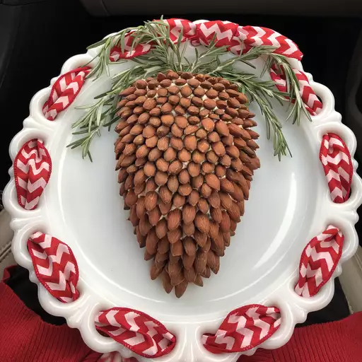

Pine Cone Cheese Ball

Description
Any cheese ball is a welcome addition to a holiday party spread, but when you bring one that looks like a pine cone, you're talking about a real showstopper.
Ingredients
- 2 (8 ounce) packages cream cheese, softened
- 4 ounces goat cheese, softened
- 3 tablespoons chopped fresh flat-leaf parsley
- 2 tablespoons chopped fresh tarragon
- 1 tablespoon chopped fresh thyme
- ½ clove garlic, minced, or more to taste
- 1 pinch cayenne pepper, or to taste
- Salt and ground black pepper to taste
- 1 cup whole almonds, or as needed
- 3 large fresh rosemary sprigs
Steps
- Stir cream cheese, goat cheese, parsley, tarragon, thyme, garlic, cayenne pepper, salt, and black pepper together in a bowl until smooth and well-mixed.
- Turn cheese mixture out onto a serving platter and form into a tapered oval shape to resemble a pine cone.
- Starting at the tapered end, press almonds into the cheese cone so that the tip of the almond is facing out and down, and cheese cone is completely covered with almonds and resembles a pine cone. Place rosemary sprigs at the top to resemble pine needles.